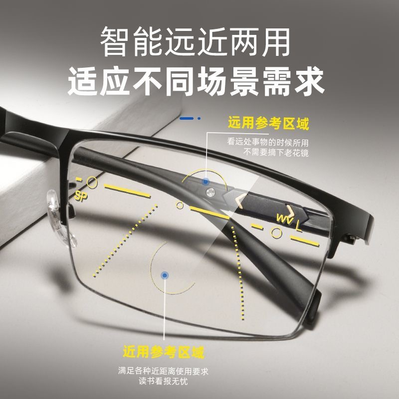

استخدام العدسات المتعددة البؤر التقدمية لعكس قصر النظر | أصلي، ترجم بواسطة AI
نظارات ثنائية البؤرة
النظارات ثنائية البؤرة تحتوي على قوتين بصريتين مختلفتين: واحدة للجزء العلوي والأخرى للجزء السفلي. عادةً ما يكون هناك فرق كبير في القوة البصرية بين هذين الجزءين من العدسة.
الجزء العلوي مخصص للرؤية البعيدة، بينما الجزء السفلي للرؤية القريبة. المشكلة في النظارات ثنائية البؤرة أنه عند النظر إلى السبورة أو استخدام الكمبيوتر، تستخدم الجزء العلوي للنظارات (المخصص للرؤية البعيدة).
لذلك، عند استخدام الكمبيوتر، تنظر مباشرة إلى الأمام كما لو كنت تنظر إلى أشياء بعيدة. ولكن في الواقع، تريد النظر إلى شاشة الكمبيوتر القريبة. وبالتالي، استخدام الجزء العلوي للرؤية البعيدة والجزء السفلي للرؤية القريبة قد يكون مشكلاً.
لا أعتقد أن هناك نظارات ثنائية بؤرة مثالية تسمح لعينيك برؤية ما تريد رؤيته بوضوح تام. قد يكون من الأفضل إعداد زوجين أو ثلاثة من النظارات للتكيف مع روتينك اليومي ورؤية الأشياء بوضوح. بهذه الطريقة، قد تتمكن من تحسين قصر النظر لديك مع الوقت.
ومع ذلك، إذا فكرنا بعناية في هذا الأمر، إذا كنت سأصمم نظارات ثنائية البؤرة لنفسي، سأريد أن يكون الجزء العلوي أقل بـ 175 درجة والجزء السفلي أقل بـ 200 درجة. هذا سيسمح لي باستخدام الجزء العلوي بشكل مثالي لاستخدام الكمبيوتر والجزء السفلي لقراءة الكتب أو استخدام الهاتف المحمول. لذلك، من بعض النواحي، فكرة النظارات ثنائية البؤرة مبتكرة. الأشخاص الذين اخترعوها فهموا كيفية عمل قصر النظر، ولكن ليس بالكامل.
الوصفة الطبية
التاريخ: 28 نوفمبر 2024
الرؤية
- حدة البصر: 0.9
المسافة بين الحدقتين (PD)
- القياس: 70 مم
العين اليمنى (OD)
- قصر النظر: -4.25 د
- الاستجماتيزم: -1.25 د
- المحور: 171°
العين اليسرى (OS)
- قصر النظر: -2.50 د
- الاستجماتيزم: -1.00 د
- المحور: 2°
الخطة
الهدف: الانتقال إلى عدسات متعددة البؤر التقدمية
- أدنى قوة تقدمية: +0.75 د
وصفة الرؤية القريبة
العين اليمنى (OD)
- قصر النظر: -2.50 د
- الاستجماتيزم: -1.25 د
- المحور: 171°
العين اليسرى (OS)
- قصر النظر: -0.75 د
- الاستجماتيزم: -1.00 د
- المحور: 2°
- تصحيح إضافي: +1.75 د في قصر النظر (الاستجماتيزم دون تغيير)
وصفة الرؤية البعيدة
العين اليمنى (OD)
- قصر النظر: -3.25 د
- الاستجماتيزم: -1.25 د
- المحور: 171°
العين اليسرى (OS)
- قصر النظر: -1.50 د
- الاستجماتيزم: -1.00 د
- المحور: 2°
- تصحيح إضافي: +1.00 د في قصر النظر (الاستجماتيزم دون تغيير)
 المصدر: pinduoduo.com
تجربة الاستخدام
بعد تجربة زوج من العدسات متعددة البؤر لبضع دقائق، وجدت أنها جيدة جدًا. تناسب احتياجاتي تمامًا وتكلفت حوالي 130 يوان صيني.
استخدمت البيانات أعلاه لتصميم زوج من العدسات متعددة البؤر التقدمية. يمكنني استخدام الجزء المخصص للرؤية القريبة عند استخدام الهاتف المحمول، والجزء المخصص للرؤية البعيدة عند العمل على الكمبيوتر.
في الواقع، يمكنك ضبط الجزء الذي تستخدمه للرؤية القريبة أو البعيدة عن طريق تحريك نظرتك لأعلى أو لأسفل العدسات. على الرغم من إمكانية إجراء تعديلات صغيرة، إلا أن التعديل المفرط قد يشعر بالغربة أو عدم الراحة.
سأستمر في استخدامها لبضع أيام أخرى لأرى كيف تشعر عيني.
عندما استلمت النظارات، رأيت العلامات الصفراء على العدسات.
دعم العملاء يقول:
العلامات الصفراء على العدسات مرسومة كمرجع لك. لرؤية المسافات البعيدة، انظر من خلال الدائرة العليا، وللرؤية القريبة، انظر من خلال الدائرة السفلية مع خفض عينيك قليلاً. يمكن مسح هذه العلامات. بعد التكيف لمدة يومين، يمكنك وضع شريط شفاف على مقدمة العدسة ونزعه لإزالة الخط الأصفر. ثم نظف العدسة بمنظف خاص بها. يمكنك أيضًا تنظيفها بالكحول والعطر.
و”SP” و”WV” تعنيان ما يلي، حسب ميسترال:
في سياق العدسات متعددة البؤر التقدمية، الاختصارات “SP” و”WV” تشير عادة إلى قياسات أو ميزات محددة في العدسات. إليك ما تعنيه عادةً:
SP (ارتفاع القطع أو موضع القطع): يشير إلى الموضع الرأسي لمركز الرؤية القريبة (القطع) من أسفل العدسة. مهم لضمان رؤية واضحة للمسافات القريبة عند النظر إلى أسفل.
WV (مسافة العمل للرؤية): هذا المصطلح أقل شيوعًا في العدسات التقدمية، لكنه قد يشير إلى مسافة العمل الفعالة أو طول الممر التقدمي، وهو المنطقة في العدسة التي تتغير فيها القوة تدريجيًا من الرؤية البعيدة إلى القريبة.
هذه القياسات حاسمة لتثبيت العدسات التقدمية لضمان الراحة البصرية والأداء الأمثل للمستخدم. استشر دائمًا متخصصًا في رعاية العين للحصول على معلومات دقيقة ومخصصة.
التحسين
الآن، أرتدي زوجًا من العدسات متعددة البؤر التقدمية. التصحيح الإضافي للرؤية القريبة هو +1.75 د في قصر النظر (الاستجماتيزم دون تغيير). التصحيح الإضافي للرؤية البعيدة هو +1.00 د في قصر النظر (الاستجماتيزم دون تغيير).
هذا مثالي بالنسبة لي لاستخدام الرؤية البعيدة للنظر إلى الكمبيوتر مع النظر إلى الأعلى بين الحين والآخر. أحيانا، أستخدم الرؤية القريبة لاستخدام الهاتف أو قراءة الأوراق أو الكتب.
ومع ذلك، يمكن تحسين طريقة استخدامي للنظارات. أحيانًا، عند قيادة السيارة، هناك العديد من إشارة المرور الحمراء. أثناء الانتظار للإشارة الخضراء، أستخدم نظارات الرؤية الليلية التي تطابق وصفتي الطبية تمامًا. اعتقدت أن الحل قد يكون الحصول على زوج جديد من العدسات متعددة البؤر التقدمية. سيظل التصحيح الإضافي للرؤية القريبة +1.75 د في قصر النظر (الاستجماتيزم دون تغيير)، بينما سيقل التصحيح الإضافي للرؤية البعيدة إلى +0.25 د في قصر النظر (الاستجماتيزم دون تغيير).
الرؤية القريبة في نظاراتي متعددة البؤر الليلية هي نفسها في نظاراتي متعددة البؤر العادية. ولكن بالنسبة للرؤية البعيدة، أريد أن تكون قريبة من وصفتي الطبية دون تغيير كبير حتى أستطيع الحفاظ على حدة بصرية تبلغ 0.8 أو 0.9 عند استخدام جزء الرؤية البعيدة.
بالنسبة للطلاب، هذا هو أفضل حل. فهم ما زالوا بحاجة إلى النظر إلى السبورة كثيرًا وهم جالسون على المكتب. لذلك، عندما ينظروا إلى أسفل، فهم في الغالب يقومون بواجباتهم الدراسية أو قراءة المواد على المكتب. وعندما ينظروا إلى أعلى، فهم في الغالب ينظروا إلى السبورة أو المعلم.
عدسات طول النظر الشيخوخي
فكر فقط في حالة عدسات طول النظر الشيخوخي. مع تقدم العمر، تتغير عضلات العين في اتجاه معاكس لتغيرها في قصر النظر.
الصورة أدناه توضح ذلك جيدًا. يمكننا تطبيق المبدأ المستخدم في عدسات طول النظر الشيخوخي على عدسات قصر النظر.
 المصدر: pinduoduo.com
المصدر: pinduoduo.com
بعد استخدامها لمدة ستة أشهر
في معظم الأوقات، أستخدم الجزء الأوسط أو العلوي من العدسات متعددة البؤر التقدمية، مما يعقد الأمور. لجأت مرة أخرى إلى استخدام العدسات أحادية البؤرة.